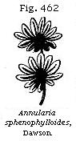
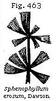
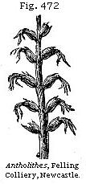
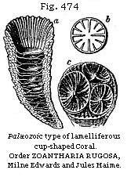
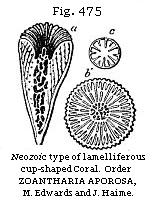
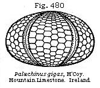
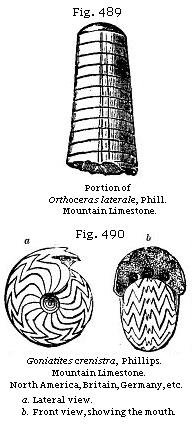
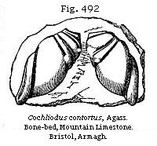

The Student’s Elements of Geology
Vegetation of the Coal Period. — Ferns, Lycopodiaceæ, Equisetaceæ, Sigillariæ, Stigmariæ, Coniferæ. — Angiosperms. — Climate of the Coal Period. — Mountain Limestone. — Marine Fauna of the Carboniferous Period. — Corals. — Bryozoa, Crinoidea. — Mollusca. — Great Number of fossil Fish. — Foraminifera.
Vegetation of the Coal Period.—In the last chapter we have seen that the seams of coal, whether bituminous or anthracitic, are derived from the same species of plants, and Goppert has ascertained that the remains of every family of plants scattered through the shales and sandstones of the coal-measures are sometimes met with in the pure coal itself—a fact which adds greatly to the geological interest of this flora.
The coal-period was called by Adolphe Brongniart the age of Acrogens,* so great appears to have been the numerical preponderance of flowerless or cryptogamic plants of the families of ferns, club-mosses, and horse-tails. He reckoned the known species in 1849 at 500, and the number has been largely increased by recent research in spite of reductions owing to the discovery that different parts of even the same plants had been taken for distinct species. Notwithstanding these changes, Brongniart’s generalisation concerning this flora still holds true, namely, that the state of the vegetable world was then extremely different from that now prevailing, not only because the cryptogamous plants constituted nearly the whole flora, but also because they were, on the whole, more highly developed than any belonging to the same class now existing, and united some forms of structure now only found separately and in distinct orders. The only phænogamous plants were constitute any feature in the coal are the coniferæ; monocotyledonous angiosperms appear to have been very rare, and the dicotyledonous, with one or two doubtful exceptions, were wanting. For this we are in some measure prepared by what we have seen of the Secondary or Mesozoic floras if, consistently with the belief in the theory of evolution, we expect to find the prevalence of simpler and less specialised organisms in older rocks.
* For botanical nomenclature see p. 304.
Ferns.—We are struck at the first glance with the similarity of the ferns to those now living. In the fossil genus Pecopteris, for example (Fig. 448), it is not easy to decide whether the fossils might not be referred to the same genera as those established for living ferns; whereas, in regard to some of the other contemporary families of plants, with the exception of the fir tribe, it is not easy to guess even the class to which they belong. The ferns of the Carboniferous period are generally without organs of fructification, but in the few instances in which these do occur in a fit state for microscopical investigations they agree with those of the living ferns.
When collecting fossil specimens from the coal-measures of Frostburg, in Maryland, I found in the iron-shales several species with well-preserved rounded spots or marks of the sori (see Fig. 448). In the general absence of such characters they have been divided into genera distinguished chiefly by the branching of the fronds and the way in which the veins of the leaves are disposed. The larger portion are supposed to have been of the size of ordinary European ferns, but some were decidedly arborescent, especially the group called Caulopteris (see Fig. 449) by Lindley, and the Psaronius of the upper or newest coal-measures, before alluded to (p. 393). All the recent tree-ferns belong to one tribe (Polypodiaceæ), and to a small number only of genera in that tribe, in which the surface of the trunk is marked with scars,
* Sir C. Bunbury, Quart. Geol. Journ., vol. ii, 1845.
or cicatrices, left after the fall of the fronds. These scars resemble those of Caulopteris.
No less than 130 species of ferns are enumerated as having been obtained from the British coal-strata, and this number is more than doubled if we include the Continental and American species. Even if we make some reduction on the ground of varieties which have been mistaken, in the absence of their fructification, for species, still the result is singular, because the whole of Europe affords at present no more than sixty-seven indigenous species.
Lycopodiaceæ—Lepidodendron.—About forty species of fossil plants of the Coal have been referred to this genus, more than half of which are found in the British coal-measures. They consist of cylindrical stems or trunks, covered with leaf-scars. In their mode of branching, they are always dichotomous (see Fig. 454). They belong to the Lycopodiaceæ, bearing sporangia and spores similar to those of the living representatives of this family (Fig. 457); and although most of the Carboniferous species grew to the size of large trees, Mr. Carruthers has found by careful measurement that the volume of the fossil spores did not exceed that of the recent club-moss, a fact of some geological importance, as it may help to explain the facility with which these seeds may
have been transported by the wind, causing the same wide distribution of the species of the fossil forests in Europe and America which we now observe in the geographical distribution of so many living families of cryptogamous plants.
The Figs. 453–455 represent a fossil Lepidodendron, 49 feet long, found in Jarrow Colliery, near Newcastle, lying in shale parallel to the planes of stratification. Fragments of others, found in the same shale, indicate, by the size of the rhomboidal scars which cover them, a still greater magnitude.
The living club-mosses, of which there are about 200 species, are most abundant in tropical climates. They usually creep on the ground, but some stand erect, as the Lycopodium densum from New Zealand (see Fig. 456), which attains a height of three feet.
In the Carboniferous strata of Coalbrook Dale, and in many other coal-fields, elongated cylindrical bodies, called fossil cones, named Lepidostrobus by M. Adolphe Brongniart, are met with. (See Fig. 457.) They often form the nucleus of concretionary balls of clay-ironstone, and are well preserved, exhibiting a conical axis, around which a great quantity of scales were compactly imbricated. The opinion of M. Brongniart that the Lepidostrobus is the fruit of Lepidodendron has been confirmed, for these strobili or fruits have been found terminating the tip of a branch of a well-characterised Lepidodendron in Coalbrook Dale and elsewhere.
Equisetaceæ.—To this family belong two fossil genera of the coal, Equisetites and Calamites. The Calamites were evidently closely related to the modern horse-tails (Equiseta) differing principally in their great size, the want of sheaths at the joints, and some details of fructification. They grew in dense brakes on sandy and muddy flats in the manner of modern Equisetaceæ, and their remains are frequent in the
coal. Seven species of this plant occur in the great Nova Scotia section before described, where the stems of some of them five inches in diameter, and sometimes eight feet high, may be seen terminating downward in a tapering root (see Fig. 460).
Botanists are not yet agreed whether the Asterophyllites, a species of which is represented in Fig. 461, can form a separate genus from the Calamite, from which, however, according to Dr. Dawson, its foliage is distinguished by a true mid-rib, which is wanting in the leaves known to belong to some Calamites.
Figs. 462 and 463 represent leaves of Annularia and Sphenophyllum, common in the coal, and believed by Mr. Carruthers to be leaves of Calamites. Dr. Williamson, who has carefully studied the Calamites, thinks that they had a fistular pith, exogenous woody stem, and thick smooth bark, which last having always disappeared, leaves a fluted stem, as represented in Fig. 459.
Sigillaria.—A large portion of the trees of the Carboniferous period belonged to this genus, of which as many as 28 species are enumerated as British. The structure, both internal and external, was very peculiar, and, with reference to existing types, very anomalous. They were formerly referred, by M. Ad. Brongniart, to ferns, which they resemble in the scalariform texture of their vessels and, in
some degree, in the form of the cicatrices left by the base of the leaf-stalks which have fallen off (see Fig. 464). But some of them are ascertained to have had long linear leaves, quite unlike those of ferns. They grew to a great height, from 30 to 60, or even 70 feet, with regular cylindrical stems, and without branches, although some species were dichotomous towards the top. Their fluted trunks, from one to five feet in diameter, appear to have decayed more rapidly in the interior than externally, so that they became hollow when standing; and when thrown prostrate, they were squeezed down and flattened. Hence, we find the bark of the two opposite sides (now converted into bright shining coal) constitute two horizontal layers, one upon the other, half an inch, or an inch, in their united thickness. These same trunks, when they are placed obliquely or vertically to the planes of stratification, retain their original rounded form, and are uncompressed, the cylinder of bark having been filled with sand, which now affords a cast of the interior.
Dr. Hooker inclined to the belief that the Sigillariæ may have been cryptogamous, though more highly developed than any flowerless plants now living. Dr. Dawson having found in some species what he regards as medullary rays, thinks with Brongniart that they have some relation to gymnogens, while Mr. Carruthers leans to the opinion that they belong to the Lycopodiaceæ.
Stigmaria.—This fossil, the importance of which has already been pointed out in p. 398, was originally conjectured to be an aquatic plant. It is now ascertained to be the root of Sigillaria. The connection of the roots with the stem, previously suspected, on botanical grounds, by Brongniart, was first proved, by actual contact, in the Lancashire coal-field, by Mr. Binney. The fact has lately been shown, even more distinctly, by Mr. Richard Brown, in his description of the Stigmariæ occurring in the under-clays of the coal-seams of the Island of Cape Breton, in Nova Scotia. In a specimen of one of these, represented in Fig. 465, the spread of the roots was sixteen feet, and some of them sent out rootlets, in all directions, into the surrounding clay.
In the sea-cliffs of the South Joggins in Nova Scotia, I examined several erect Sigillariæ, in company with Dr. Dawson, and we found that from the lower extremities of the trunk they sent out Stigmariæ as roots. All the stools of the fossil trees dug out by us divided into four parts, and these again bifurcated, forming eight roots, which were also dichotomous when traceable far enough. The cylindrical rootlets formerly regarded as leaves are now shown by more perfect specimens to have been attached to the root by fitting into deep cylindrical pits. In the fossil there is rarely any trace of the form of these cavities, in consequence of the shrinkage of the surrounding tissues. Where the rootlets are removed, nothing remains on the surface of the Stigmaria but rows of mammillated tubercles (see Figs. 466, 467), which have formed the base of each rootlet.
These protuberances may possibly indicate the place of a joint at the lower extremity of the rootlet. Rows of these tubercles are arranged spirally round each root, which have always a medullary axis and woody system much resembling that of Sigillaria, the structure of the vessels being, like it, scalariform.
Coniferæ.—The coniferous trees of this period are referred to five genera;
the woody structure of some of them showing that they were allied to the Araucarian division of pines, more than to any of our common European firs. Some of their trunks exceeded forty-four feet in height. Many, if not all of them, seem to have differed from living Coniferæ in having large piths; for Professor Williamson has demonstrated the fossil of the coal-measures called Sternbergia to be the pith of these trees, or rather the cast of cavities formed by the shrinking or partial absorption of the original medullary axis (see Figs. 468, 469). This peculiar type of pith is observed in living plants of very different families, such as the common Walnut and the White Jasmine, in which the pith becomes so reduced as simply to form a thin lining of the medullary cavity, across which transverse plates of pith extend horizontally, so as to divide the cylindrical hollow into discoid interspaces. When these interspaces have been filled up with inorganic matter, they constitute an axis to which, before their true nature was known, the provisional name of Sternbergia (d, d, Fig. 468) was given. In the above specimen the structure of the wood (b, Figs. 468 and 469) is coniferous, and the fossil is referable to Endlicher’s fossil genus Dadoxylon.
The fossil named Trigonocarpon (Figs. 470 and 471), formerly supposed to be the fruit of a palm, may now, according to Dr. Hooker, be referred, like the Sternbergia, to the Coniferæ. Its geological importance is great, for so abundant is it in the coal-measures, that in certain localities the fruit of
* Manchester Phil. Mem., vol. ix, 1851.
some species may be procured by the bushel; nor is there any part of the formation where they do not occur, except the under-clays and limestone. The sandstone, ironstone, shales, and coal itself, all contain them. Mr. Binney has at length found in the clay-ironstone of Lancashire several specimens displaying structure, and from these, says Dr. Hooker, we learn that the Trigonocarpon belonged to that large section of existing coniferous plants which bear fleshy solitary fruits, and not cones. It resembled very closely the fruit of the Chinese genus Salisburia, one of the Yew tribe, or Taxoid conifers.
Angiosperms.—The curious fossils called Antholithes by Lindley have usually been considered to be flower spikes, having what seems a calyx and linear petals (see Fig. 472). Dr. Hooker, after seeing very perfect specimens, also thought that they resembled the spike of a highly-organised plant in full flower, such as one of the Bromeliaceæ, to which Professor Lindley had at first compared them. Mr. Carruthers, who has lately examined a large series in different museums, considers it to be a dicotyledonous angiosperm allied to Orobanche (broom-rape), which grew, not on the soil, but parasitically on the trees of the coal forests.
In the coal-measures of Granton, near Edinburgh, a remarkable fossil (Fig. 473) was found and described in 1840,* by Dr. Robert Paterson. It was compressed between layers of bituminous shale, and consists of a stem bearing a cylindrical spike, a, which in the portion preserved in the slate exhibits two subdivisions and part of a third. The spike is covered on the exposed surface with the four-cleft calyces of the flowers arranged in parallel rows. The stem shows, at b, a little below the spike, remains of a lateral appendage, which is supposed to indicate the beginning of the spathe. The fossil has been referred to the Aroidiæ, and
* Trans. of Bot. Soc. of Edinburgh, vol. i, 1844.
there is every probability that it is a true member of this order. There can at least be no doubt as to the high grade of its organisation, and that it belongs to the monocotyledonous angiosperms. Mr. Carruthers has carefully examined the original specimen in the Botanical Museum, Edinburgh, and thinks it may have been an epiphyte.
Climate of the Coal Period.—As to the climate of the Coal, the Ferns and the Coniferæ are perhaps the two classes of plants which may be most relied upon as leading us to safe conclusions, as the genera are nearly allied to living types. All botanists admit that the abundance of ferns implies a moist atmosphere. But the coniferæ, says Hooker, are of more doubtful import, as they are found in hot and dry, and in cold and dry climates; in hot and moist, and in cold and moist regions. In New Zealand the coniferæ attain their maximum in numbers, constituting 1/62 part of all the flowering plants; whereas in a wide district around the Cape of Good Hope they do not form 1/1600 of the phenogamic flora. Besides the conifers, many species of ferns flourish in New Zealand, some of them arborescent, together with many lycopodiums; so that a forest in that country may make a nearer approach to the carboniferous vegetation than any other now existing on the globe.
It has already been stated that the Carboniferous or Mountain Limestone underlies the coal-measures in the South of England and Wales, whereas in the North, and in Scotland, marine calcareous rocks partly of the age of the Mountain Limestone alternate with shales and sandstones, containing seams of coal. In its most calcareous form the Mountain Limestone is destitute of land-plants, and is loaded
with marine remains—the greater part, indeed, of the rock being made up bodily of crinoids, corals, and bryozoa with interspersed mollusca.
Corals.—The corals deserve especial notice, as the cup-and-star corals, which have the most massive and stony skeletons, display peculiarities of structure by which they may be distinguished generally, as MM. Milne Edwards and Haime first pointed out, from all species found in strata newer than the Permian. There is, in short, an ancient or Palæozoic, and a modern or Neozoic type, if, by the latter term, we designate (as proposed by Professor E. Forbes) all strata from the triassic to the most modern, inclusive. The accompanying diagrams (Figs. 474, 475) may illustrate these types.
|  |
|
|  |
|
It will be seen that the more ancient corals have what is called a quadripartite arrangement of the chief plates or lamellæ—parts of the skeleton which support the organs of reproduction. The number of these lamellæ in the Palæozoic type is 4, 8, 16, etc.; while in the Neozoic type the number is 6, 12, 24, or some other multiple of six; and this holds good, whether they be simple forms, as in Figs. 474, a, and 475, a, or aggregate clusters of corallites, as in 474, c. But further investigations have shown in this, as in all similar grand generalisations in natural history, that there are excepions to the rule. Thus in the Lower Greensand Holocystis elegans (Ed. and H.) and other forms have the Palæozoic type, and Dr. Duncan has shown to what extent the Neozoic forms penetrate downward into the Carboniferous and Devonian rocks.
From a great number of lamelliferous corals met with in the Mountain Limestone, two species (Figs. 476, 477) have been selected, as having a very wide range, extending from the eastern borders of Russia to the British Isles, and being found almost everywhere in each country. These fossils, together with numerous species of Zaphrentis, Amplexus, Cyathophyllum, Clisiophyllum, Syringopora, and Michelinia,* form a group of rugose corals widely different from any that followed them.
* For figures of these corals, see Palæontographical Society’s Monographs, 1852.
Bryozoa and Crinoidea.—Of the Bryozoa, the prevailing forms are Fenestella, Hemitrypa, and Polypora, and these often form considerable beds. Their net-like fronds are easily recognised. Crinoidea are also numerous in the Mountain Limestone (see Figs. 478, 479), two genera, Pentremites and Codonaster, being peculiar to this formation in Europe and North America.
In the greater part of them, the cup or pelvis, Figure 479, b, is greatly developed in size in proportion to the arms, although this is not the case in Fig. 478. The genera Poteriocrinus, Cyathocrinus, Pentremites, Actinocrinus, and Platycrinus, are all of them characteristic of this formation. Other Echinoderms are rare, a few Sea-Urchins only being known: these have a complex structure, with many more plates on their surface than are seen in the modern genera of the same group. One genus, the Palæchinus (Fig. 480), is the analogue of the modern Echinus, but has four, five, or six rows of plates in the interambulacral region or area, whereas the modern genera have only two. The other, Archæocidaris, represents, in like manner, the Cidaris of the present seas.
Mollusca.—The British Carboniferous mollusca enumerated by Mr. Etheridge* comprise 653 species referable to 86 genera, occurring chiefly in the Mountain Limestone. Of
* Quart. Geol. Journ., vol. xxiii, p. 674, 1867.
this large number only 40 species are common to the underlying Devonian rocks, 9 of them being Cephalopods, 7 Gasteropods, and the rest bivalves, chiefly Brachiopoda (or Palliobranchiates). This latter group constitutes the larger part of the Carboniferous Mollusca, 157 species being known in Great Britain alone, and it will be found to increase in importance in the fauna of the primary rocks the lower we descend in the series. Perhaps the most characteristic shells of the formation are large species of Productus, such as P. giganteus, p. hemisphericus, P. semireticulatus (Fig. 481), and P. scabriculus. Large plaited spirifers, as Spirifera striata, S. rotundata, and S. trigonalis (Fig. 482), also abound; and smooth species, such as Spirifera glabra (Fig. 483), with its numerous varieties.
Among the brachiopoda, Terebratula hastata (Fig. 484) deserves mention, not only for its wide range, but because it often retains the pattern of the original coloured
stripes which ornamented the living shell. These coloured bands are also preserved in several lamellibranchiate bivalves, as in Aviculopecten (Fig. 485), in which dark stripes alternate with a light ground. In some also of the spiral univalves the pattern of the original painting is distinctly retained, as in Pleurotomaria (Fig. 486), which displays wavy blotches, resembling the colouring in many recent trochidæ.
Some few of the carboniferous mollusca, such as Avicula, Nucula (sub-genus Ctenodonta), Solemya, and Lithodomus, belong no doubt to existing genera; but the majority, though often referred to as living types, such as Isocardia, Turritella, and Buccinum, belong really to forms which appear to have become extinct at the close of the Palæozoic epoch. Euomphalus is a characteristic univalve shell of this period. In the interior it is divided into chambers (Fig. 487, d), the septa or partitions not being perforated as in foraminiferous shells, or in those having siphuncles, like the Nautilus. The animal appears to have retreated at different periods of its growth from the internal cavity previously formed, and to have closed all communication with it by a septum. The number of chambers is irregular, and they are generally wanting in the innermost whorl. The animal of the recent Turritella communis partitions off in like manner as it advances in age a part of its spire, forming a shelly septum.
More than twenty species of the genus Bellerophon (see Fig. 488), a shell like the living Argonaut without chambers, occur in the Mountain Limestone. The genus is not met with in strata of later date. It is most generally regarded as belonging to the pelagic Nucleobranchiata and the family Atlantidæ, partly allied to the Glass-Shell, Carinaria; but by some few it is thought to be a simple form of Cephalopod.
The carboniferous Cephalopoda do not depart so widely from the living type (the Nautilus) as do the more ancient Silurian representatives of the same order; yet they offer some remarkable forms. Among these is Orthoceras, a siphuncled and chambered shell, like a Nautilus uncoiled and straightened (Fig. 489). Some species of this genus are several feet long. The Goniatite is another genus, nearly allied to the Ammonite, from which it differs in having the lobes of the septa free from lateral denticulations, or crenatures; so that the outline of these is angular, continuous, and uninterrupted. The species represented in Fig. 490 is found in most localities, and presents the zigzag character of the septal lobes in perfection. The dorsal position of the siphuncle, however, clearly distinguishes the Goniatite from the Nautilus, and proves it to have belonged to the family of the Ammonites, from which, indeed, some authors do not believe it to be generically distinct.
Fossil Fish.—The distribution of these is singularly partial; so much so, that M. De Koninck of Liége, the eminent palæontologist, once stated to me that, in making his extensive collection of the fossils of the Mountain Limestone of Belgium, he had found no more than four or five examples of the bones or teeth of fishes. Judging from Belgian data, he might have concluded that this class of vertebrata was of extreme rarity in the Carboniferous seas; whereas the
investigation of other countries has led to quite a different result. Thus, near Clifton, on the Avon, as well as at numerous places around the Bristol basin from the Mendip Hills to Tortworth, there is a celebrated “bone-bed,” almost entirely made up of ichthyolites. It occurs at the base of the Lower Limestone shales immediately resting upon the passage beds of the Old Red Sandstone. Similar bone-beds occur in the Carboniferous Limestone of Armagh, in Ireland, where they are made up chiefly of the teeth of fishes of the Placoid order, nearly all of them rolled as if drifted from a distance. Some teeth are sharp and pointed, as in ordinary sharks, of which the genus Cladodus afford an illustration; but the majority, as in Psammodus and Cochliodus, are, like the teeth of the Cestracion of Port Jackson (see Fig. 261), massive palatal teeth fitted for grinding. (See Figs. 491, 492.)
There are upward of seventy other species of fossil fish known in the Mountain Limestone of the British Islands. The defensive fin-bones of these creatures are not infrequent at Armagh and Bristol; those known as Oracanthus, Ctenocanthus, and Onchus are often of a very large size. Ganoid fish, such as Holoptychius, also occur; but these are far less numerous. The great Megalichthys Hibberti appears to range from the Upper Coal-measures to the lowest Carboniferous strata.
Foraminifera.—In the upper part of the Mountain Limestone group in the S.W. of England, near Bristol, limestones having a distinct oolitic structure alternate with shales. In these rocks the nucleus of every minute spherule is seen, under the microscope, to consist of a small rhizopod or foraminifer. This division of the lower animals, which is represented so fully at later epochs by the Nummulites and their numerous minute allies, appears in the Mountain Limestone to be restricted to a very few species, among which Textularia, Nodosaria, Endothyra, and Fusulina (Fig. 493), have been
recognised. The first two genera are common to this and all the after periods; the third has been found in the Upper Silurian, but is not known above the Carboniferous strata; the fourth (Fig. 493) is characteristic of the Mountain Limestone in the United States, Arctic America, Russia, and Asia Minor, but is also known in the Permian.
{kind=link}
{kind=link}
{kind=link}